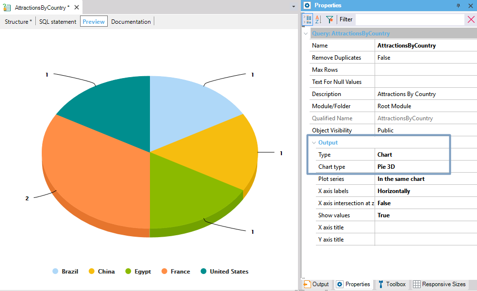
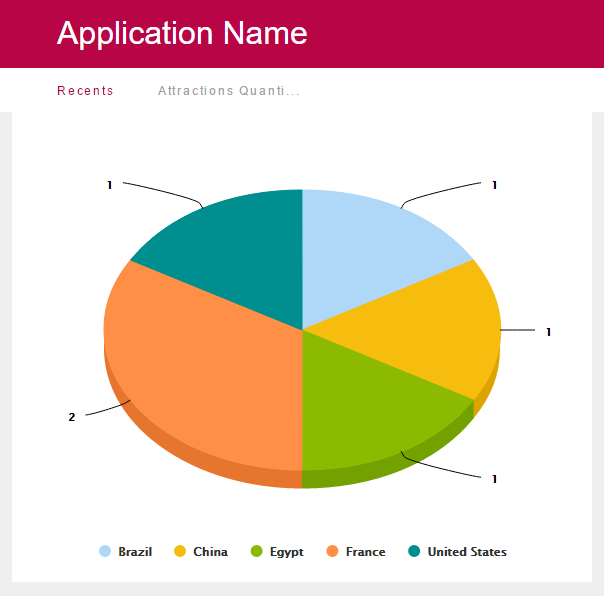

Query Object Usage Example
The objective of this document is to provide a detailed list of steps required to use the Query object and QueryViewer control. This example is based on the reality of a Travel Agency and includes concepts such as Countries, Cities, Attractions, Tickets, Airports and more. Many scenarios can be solved by using a Query object, so let's focus on solving the following problem: knowing the number of attractions in France and Brazil. Note: It is assumed that you have read the Query object and QueryViewer control documents, and that you're familiar with basic concepts such as the query object structure. Experience more QueryViewer functionalities with the TestWebQueryViewer KB sample. Step-by-step guide1) Object creationCreate a Query object called AttractionsByCountry. 2) Object definitionTo define the query's result, add attributes in the Attributes node under the Structure tab. These attributes can be added in two ways: drag them from the Work With Attributes window to the query: Or, write the attribute names inline.
Note that a suggested mechanism is available to make this task easier. Use one method to include the following attributes in the query: AttractionName and CountryName. 3) DescriptionsOnce the attributes are under the Attributes node, check each Description column and set the descriptions: Attractions for AttractionName and Countries for CountryName. Remember that descriptions are shown when the query is executed in the Preview tab or at runtime. 4) AggregationsTo find out the number of attractions in each city, the AttractionName attribute must be defined as an aggregated formula. Again, there are two ways to perform this action: right-clicking on the attribute and selecting the desired aggregation or typing the formula inline. Note that the suggested mechanism, mentioned in the previous steps, also takes into account aggregation functions when suggesting elements to add to the query. Using one method, include the Count aggregation to AttractionName attribute. The result must be as follows: 5) PreviewSometimes, an early result of the query is very useful to find out if the desired result is displayed. To do so, select the Preview tab and set the following property values:
 6) FiltersSuppose that we want to see only the values related to France and Brazil in the query result. To achieve this, define the filter CountryName in [France, Brazil] under the Filters node. The filter can be written inline or can be set using the right-click options available in each level. The new query structure will look as shown below: Return to the Preview section, and after a recalculation of the SQL statement needed, the new query result will be displayed. 7) QueryViewerSo far, we have defined the query to execute. Now, we need to include it in the application to be visible for the users. For a Query object to be run at runtime, it needs a special control called QueryViewer control. This control needs to be dragged to a Web Panel object. So, create a Web Panel object called AttractionsQuantityByCountry. And drag the QueryViewer control from the toolbar. Next, we need to set the control properties, so configure the Object property with the value AttractionsByCountry. 8) ExecutionThe final step is to display the query at runtime. To do so, run the application (F5) and open the Web Panel. At runtime, it will look as shown in the figure below: 
|

| Backlinks |
| Toc:Reporting in GeneXus |